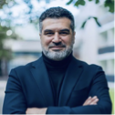

Кто ведёт
Два ведущих — две оптики, собранные в одну сильную работу.

Михаил Качалкин
Рациональный контур, структура и стратегическая сборка
Предприниматель, методолог, фасилитатор и модератор. Помогает увидеть себя как систему: выделить суть проекта, собрать цель года, структуру решений, точки роста, риски и маршрут движения.
В программе отвечает за стратегическую рамку, проектную логику, сборку личной карты и перевод внутренних инсайтов в понятные действия.

Олеся Славянская
Эмоциональный контур, телесные практики и работа с внутренним состоянием
Эксперт по энергоменеджменту, эмоциональному интеллекту и телесным практикам. Помогает участнику увидеть свои реальные источники энергии, внутренние дефициты и способы вернуть себе живость, устойчивость и контакт с собой.
В программе отвечает за эмоциональную глубину, работу с телом, состоянием, проживанием и мягкую, но сильную внутреннюю перестройку.